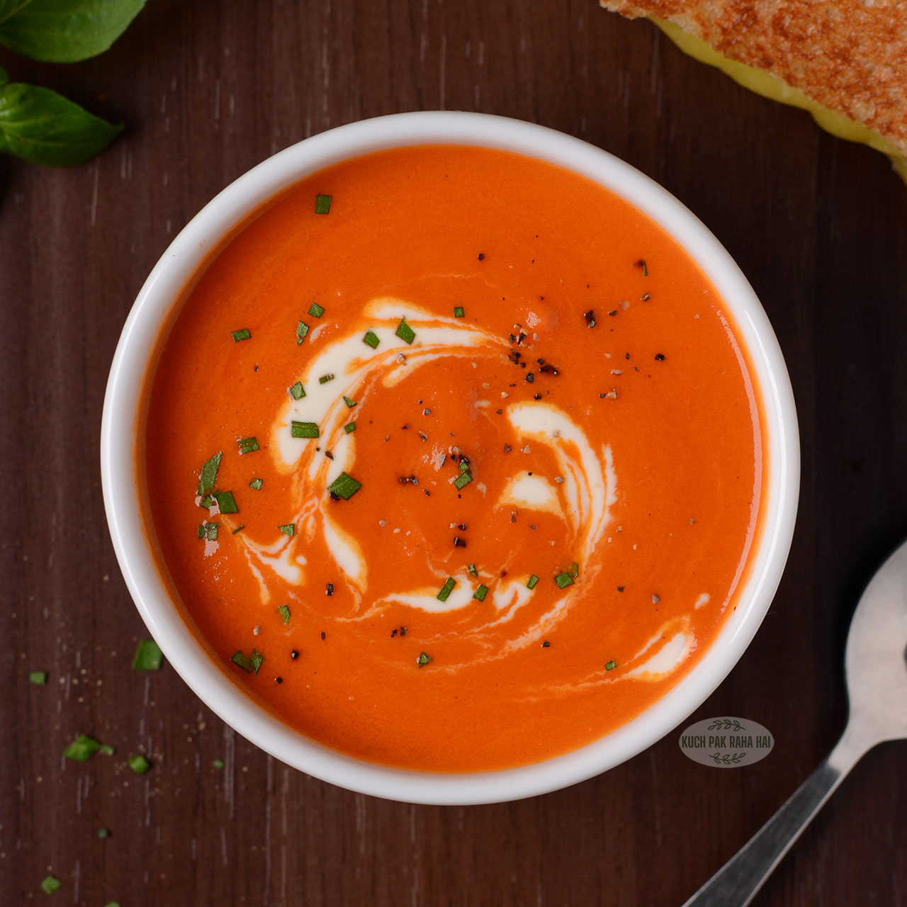

Tomato Soup

Recipe:
Tomato Soup Ingredients
- Tomatoes: This recipes starts with fresh tomatoes for good reason. It makes the best tomato soup.
- Chicken broth: Using broth will help make this more of a soup and less like a sauce.
- Garlic: The recipe calls for about four cloves, but feel free to use however much your heart desires.
- Onion: A yellow or white onion would be ideal for this soup.
- Butter: Use butter to make a roux, a thickening agent made from flour and fat.
- Flour: Use all-purpose flour to make your roux.
- Sugar and Salt: Add these two seasonings until the soup suites your tastebuds.
Directions:
- Boil the tomatoes, onion, garlic, and broth.
- Run the mixture through a food mill into a large bowl.
- Make a roux.
- Add the tomato mixture and season.
What to serve with Tomato Soup:
Of course, tomato soup's best friend is a Grilled Cheese Sandwich.
But if you want to mix it up, try one of these delicious recipes:
- Avocado Shrimp Ceviche-Estillo Sarita
- Chicken Pesto Paninis
- Lazy Chicken Parmesan Grilled Cheese